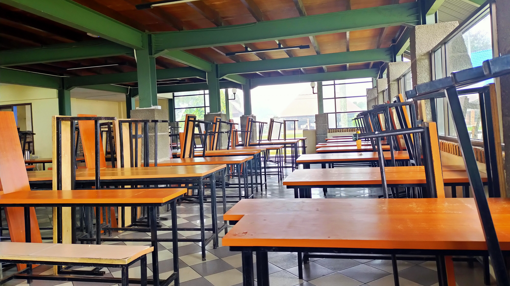

Laboratorium komputer di IT Del memiliki fasilitas seperti komputer desktop, laptop,
AC, projector, printer, dan perangkat lain sesuai kebutuhan, berfungsi sebagai ruang
kerja, pendidikan, penelitian, dan pengabdian pada masyarakat dengan harapan pengguna
menjaga keutuhan peralatan. Terdapat 8 ruangan, termasuk 3 untuk tingkat 3 (If, TRPL,
TI, TK), 4 untuk Laptop Room, dan 1 untuk Training Room. Setiap unit terhubung ke LAN
dan dapat akses internet, sementara pengguna laptop bisa menggunakan wireless atau kabel
LAN.
2
Fasilitas Asrama
Seluruh mahasiswa IT DEL diwajibkan untuk tinggal di asrama yang disediakan. Hal ini
untuk mendukung sistem pendidikan vokasi dimana mahasiswa akan melaksanakan kegiatan
akademis terjadwal sampai sore hari, ditambah kegiatan mandiri hingga pukul 10 malam....
3
Fasilitas Perpustakaan
Perpustakaan IT Del mendapat dukungan yang sangat baik dari Yayasan Del dan juga
pimpinan di IT Del. Oleh sebab itu pada tahun 2012 koleksi buku mencapai 3936 judul dan
7347 eksemplar. Selain....
4

Fasilitas Kantin
Kantin Institut Teknologi Del terdiri dari 2 kantin yaitu Kantin Lama dan Kantin Baru.
Kantin Baru didirikan pada tahun 2007. Fasilitas yang terdapat di kantin yaitu
peralatan-peralatan makan seperti ompreng dan wastafel untuk mencuci sendok. Menu
makanan yang disediakan di kantin IT DEL bergizi dan sehat untuk semua mahasiswa/i,
sehingga mahasiswa....
5
Fasilitas Hiburan dan Olahraga
Selain fasilitas untuk keperluan proses belajar mengajar, IT Del juga menyediakan sarana hiburan dan olahraga bagi warga kampus IT Del. Sarana ini dimaksudkan sebagai media untuk menghilangkan kejenuhan dari kegiatan sehari-hari di IT Del.